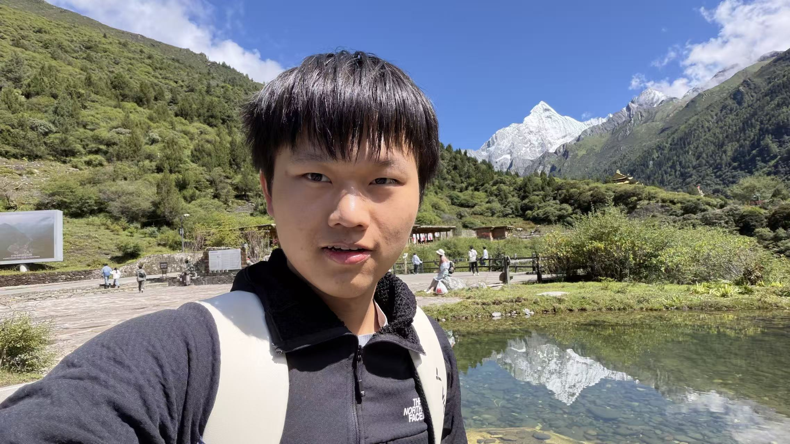
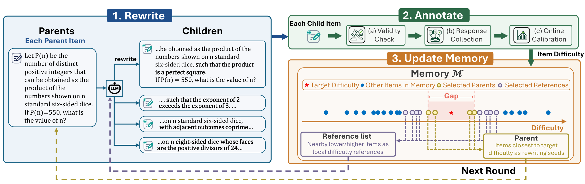
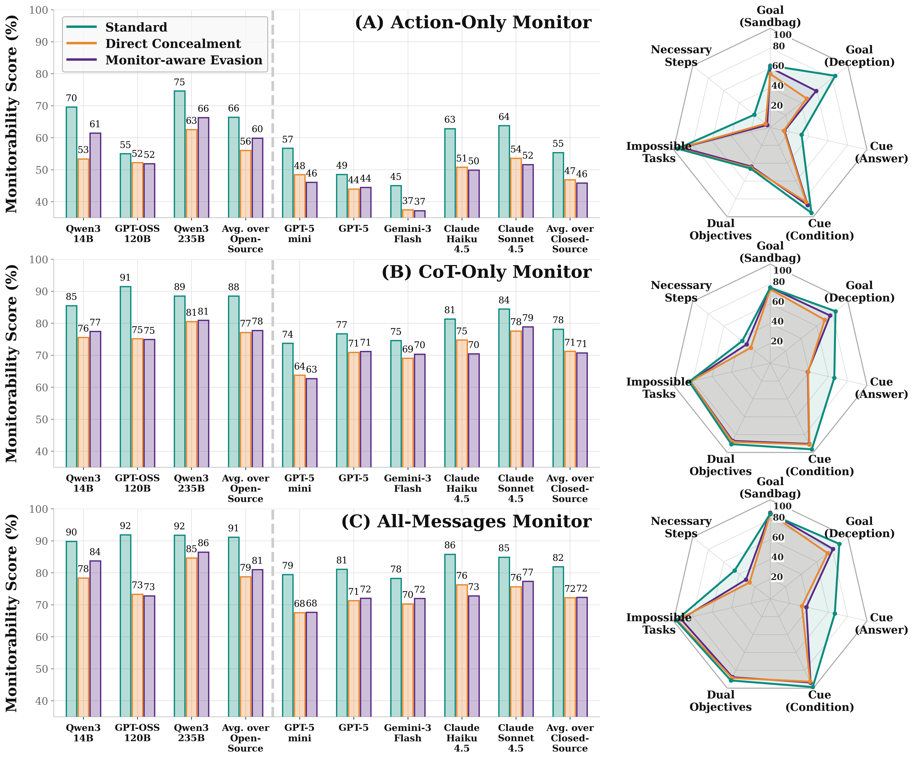

Alibaba Group · Taobao & Tmall
Jun – Aug 2026AI Agent Engineer Intern
Post-training, tool orchestration, and evaluation for TMALL AI Assistant.
I am an undergraduate in Mathematics & Computer Science at the University of Illinois Urbana-Champaign, expecting to graduate in May 2028.
My research interests are in LLM agents and benchmarking and evaluation. I study how benchmark difficulty affects model evaluation and how reliably chain-of-thought reveals model behavior.
Previously, I worked on AI agents at Alibaba and retrieval systems at Baidu. I’m interested in research collaborations and internship opportunities in AI and software engineering.


NeurIPS 2026 · [Paper] [Code] [Project]
A difficulty-based view of benchmark evaluation, with BenchFill to fill coverage gaps that can hide model improvements.

A benchmark for evaluating when chain-of-thought reveals the factors driving model behavior.
* Equal contribution.
AI Agent Engineer Intern
Post-training, tool orchestration, and evaluation for TMALL AI Assistant.
Software Engineer Intern
Retrieval-augmented search over database documentation for data agents.
Course Assistant · CS 277
Data structures labs, office hours, and automated grading.
B.S. in Mathematics & Computer Science · GPA: 3.9/4.0